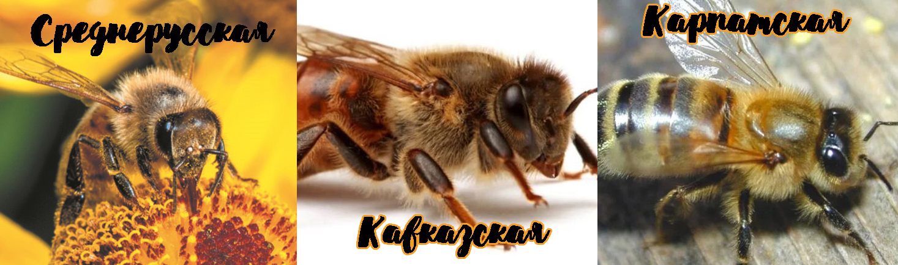

Сегодня мы поговорим о трёх видах:
1. Среднерусская темная лесная порода (Apis mellifera mellifera L.) Эти пчелы окра шены в темно-серые тона практически без желтизны. Длина хоботка — 5,9-6,4 мм. Матка очень плодовита и в идеальных условиях способна откладывать до 3000 яиц в сутки. В других случаях ее плодовитость чуть более 2000 яиц в сутки. Ее масса — 200-210 мг..